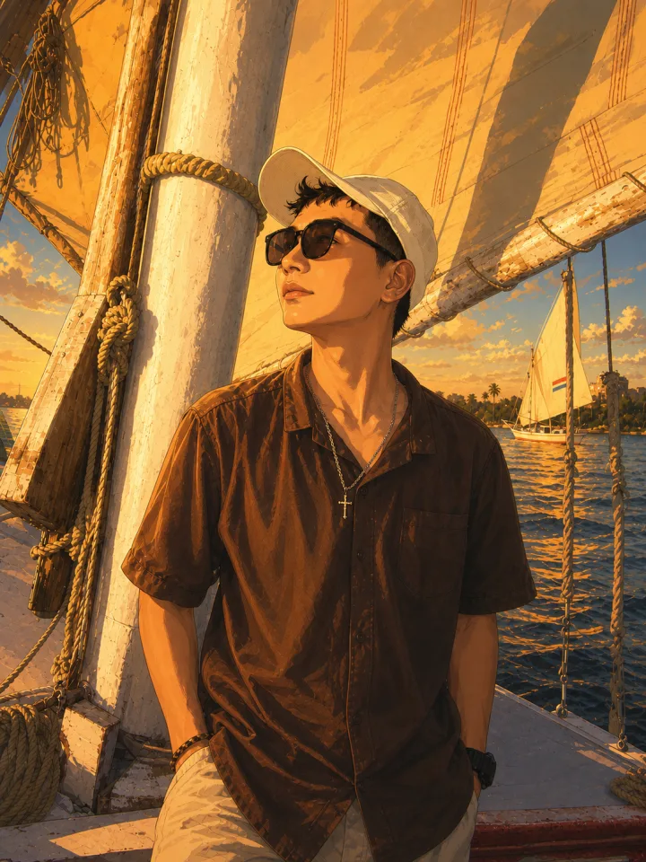
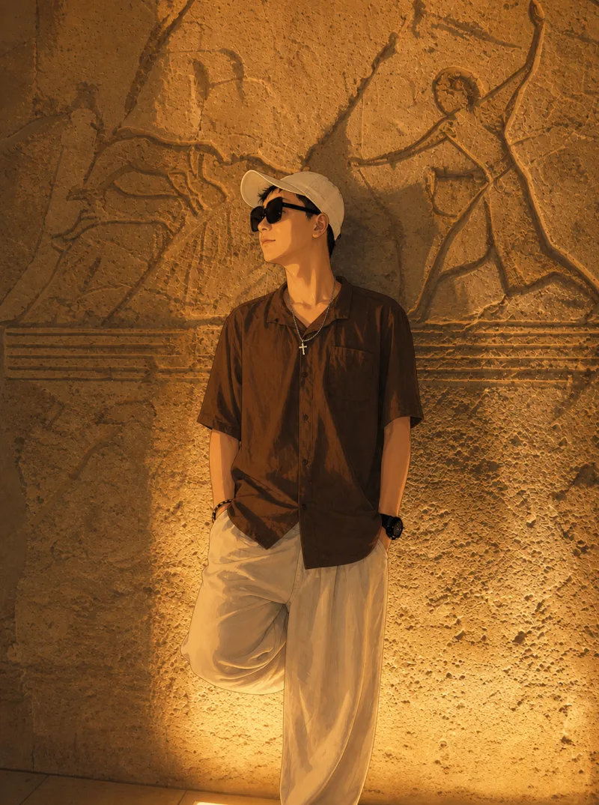

01 / HOME
Peter
一个在路上的程序员
写代码，学 AI。旅行和徒步让我保持行动感，技术让我把想法落到真实世界里。
</>PHP Dev
AIAI Learning
△Travel
⌁Hiking

01
06
BUILD · LEARN · EXPLORE
About Peter
About
个人蓝图档案
我是 Peter，94 年双子座，PHP 开发者，E 人。现在认真学习 AI，也喜欢旅行和徒步。保持好奇，持续行动，尊重每一次交流。
- </>程序员
- AIAI 学习中
- ↗旅行 / 徒步
- ♡尊重
Curiosity / 好奇心驱动
Keep learning / 持续学习
Respect / 保持尊重
Peter / 1994Developer · Explorer
REC
Life
/Motion
把生日过在埃及
旅行、徒步、在路上。不是为了包装成什么人设，只是把真的经历留下来。
CAIRO, EGYPT
30.0444° N, 31.2357° E

Birthday in Egypt
▶ 00:12:36
EGYPT
Coast
Salt Lake
Town
Red Sea
Birthday
Travel
Hike
On the way
Build session
Work
把当前状态跑成一段终端日志
正在运行的开发会话：学习 AI、写代码、整理旅行记录，保持尊重，继续往前。
Current log
Now
最近在做的事
不写空洞的计划，只留下正在发生的事情。
01
Build / Website
构建个人主页
用 Codex 把真实照片、终端动效和单页叙事组合成现在的网站。
查看源码 ↗
02
AI / Learning
AI 学习中
理解原理，动手实践，把知识变成能力。
持续中
03
Travel / Egypt
整理旅行档案
整理埃及的海岸、沙漠与城镇影像，让经历留下具体坐标。
查看影像 ↓